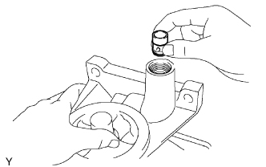
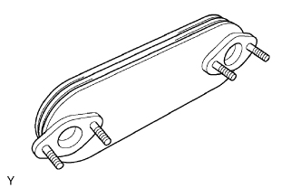

МАСЛЯНЫЙ РАДИАТОР ДВИГАТЕЛЯ > ПРОВЕРКА |
| 1. INSPECT OIL SAFETY VALVE SUB-ASSEMBLY |
|  |
Coat the valve with engine oil and check that it falls smoothly into the oil filter bracket by its own weight.
| 2. INSPECT OIL COOLER ASSEMBLY |
|  |
Check the oil cooler for damage or clogging.